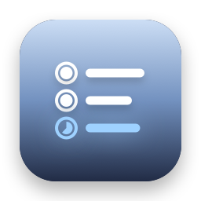
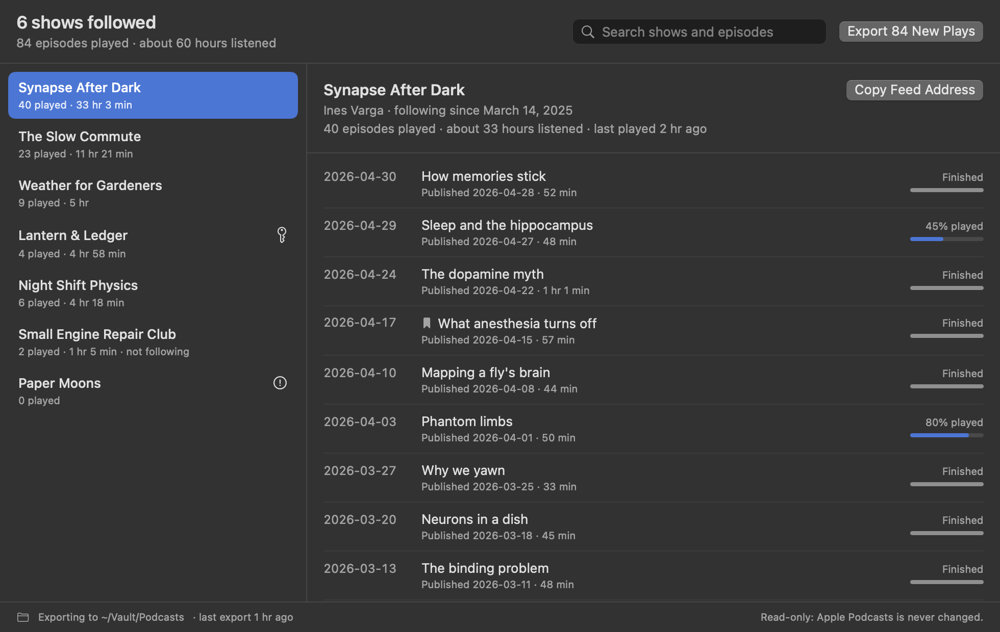

Podcast Export
The shows you follow in Apple Podcasts as OPML, ready for any podcast app. And every episode you've played, as notes and a spreadsheet that keep up as you listen.
Thanks for downloading! If it saves you some retyping, a star on GitHub helps other people find it.
free · open source · macos 14+ · read-only · no internet access
What you get

- An OPML file of the shows you follow, which Overcast, Pocket Casts, Castro, AntennaPod and most other podcast apps import. Apple Podcasts on the Mac can't make one.
- Your listening history: a note for each show with every episode you've played and how far you got, an overview of every show, and
Listening History.csvfor spreadsheets. - Only what's new: each run adds new plays and shows, keeps plays Apple Podcasts has since forgotten, and leaves files you've edited alone.
- Private feeds stay private: a feed address with a personal key goes in the OPML file and nowhere else.
- Extras: JSON, Obsidian links, automatic export, a search across shows and episodes, and a
podcast-exportcommand line tool.
What a show's note looks like
--- title: "Synapse After Dark" author: "Ines Varga" following: true episodes-played: 40 hours-listened: 33.1 tags: - podcast --- # Synapse After Dark 40 episodes played · about 33 hours listened ## Played - **2026-04-30** · How memories stick · 52 min · finished - **2026-04-29** · Sleep and the hippocampus · 48 min · 45% played
Questions
How do I get my shows out of Apple Podcasts?
Apple Podcasts on the Mac has no export. Choose Save Subscriptions as OPML… from Podcast Export's menu bar icon, then import the file in your new podcast app, usually under Settings or Import.
Can I see what I've listened to?
Yes. The window lists every episode you've played, by show, with the day you last played it and how far you got. Apple Podcasts keeps one date per episode, the last time you played it, so that's what you get. Export it for a note per show and a spreadsheet.
Why is a show missing from the OPML file?
Either you don't follow it, or it has no public feed, like some shows only Apple hosts. No other app could follow those, so they're listed in your notes instead.
Why does it need Full Disk Access?
macOS keeps Apple Podcasts' library in a protected folder no other app can read without it. Podcast Export's App Sandbox still limits it to that one folder, read-only, plus the export folder you choose. The details are in SECURITY.md.
Will it change or delete anything?
No. It can only read Apple Podcasts, and it reads a copy of its database rather than the database itself. It never deletes anything, and never overwrites a file you've edited. It doesn't export show notes or transcripts either: those belong to the shows.